Lecture 07 · 17 slides · September 3, 2026
Normalization: flatten the landscape so the network can walk.
Deep networks train by gradient descent, and gradient descent is only
fast when the loss surface is roughly round. Raw features rarely make
it so. This lecture is the accumulated fix: normalize activations
(BatchNorm, LayerNorm, RMSNorm), normalize weights (WeightNorm), add
residual shortcuts so gradients survive depth, then decide where in a
transformer block the normalization actually goes (Pre-LN, Post-LN,
DeepNorm, HybridNorm).
Lecture 07
17 slides
Manish Shrivastava · Aparajitha Allamraju
§0The deck at a glance
The lecture starts with a picture argument: a linear-regression loss
landscape is a squashed ellipse before normalization and a circle
after. Once that motivation lands, four normalizers get introduced in
quick succession (BatchNorm, LayerNorm, RMSNorm, WeightNorm), each a
different axis along which to compute mean and variance.
The rest of the lecture puts normalization into the transformer
block: residuals, then Pre-LN vs Post-LN, then two modern refinements
(DeepNorm for very deep stacks, HybridNorm for mixing LN and RMSNorm
in one block).
§1Why normalize? the shape of the loss surface
Slides 1–5 build one argument by picture. Take the simplest possible
model, look at its loss landscape when the features are raw, look at
it again after standardising the features, and see the difference.
Then read the four-bullet summary of what normalization is supposed
to buy you overall.
Slide 01 / 17
slide 01 · title
On the slide
Lecture 7 of Advanced NLP Monsoon 2026. Co-taught by Manish Shrivastava and Aparajitha Allamraju.
Normalization is a small word for a large family of tricks: any operation whose job is to keep
activations, weights, or gradients in a numerical range where optimisation actually works.
What to take from it
Historically, deeper networks kept getting harder to train. Not because the loss got harder in
principle, but because the numerical dynamics went bad: activations blew up or collapsed to zero,
gradients vanished or exploded, learning rates that worked at layer 2 broke layer 20. Every idea in this
lecture is a specific answer to a specific instance of that problem. Normalization is the reason
transformers can be stacked 100 layers deep at all.
Slide 02 / 17
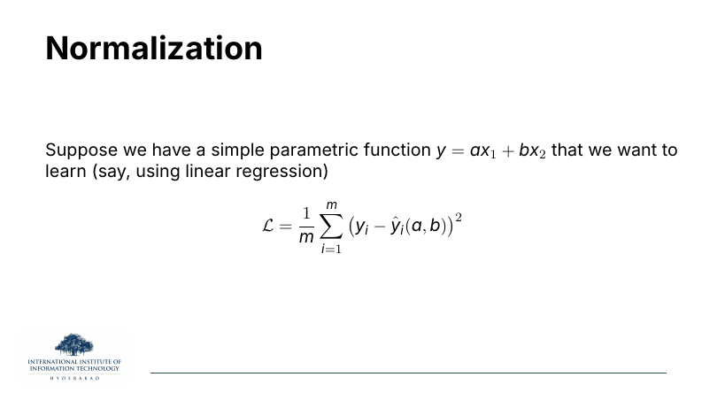
slide 02 · the toy problem
On the slide
Two-parameter linear regression: predict y from features x1 and
x2 using weights a and b. Train by mean-squared error.
What to take from it
This is the smallest model that can still demonstrate the problem. Two parameters means the
loss is a function of two numbers, which means we can literally plot the landscape on the next slide.
Nothing about the argument depends on the model being simple — the same bad geometry appears in a
transformer, just in a million-dimensional space you can't draw.
Slide 03 / 17
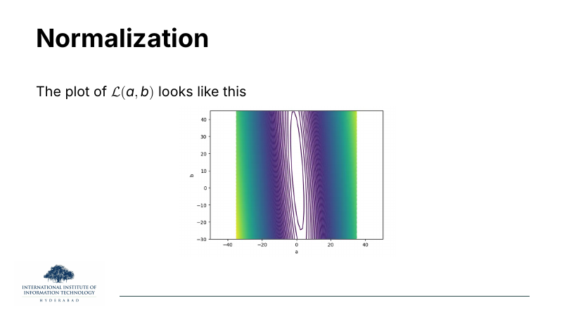
slide 03 · the ellipse from hell
On the slide
The loss surface for that two-parameter regression when the two features have very different
scales. It's an extremely elongated ellipse — a narrow trench that runs almost straight up
and down in the (a, b) plane.
Why the picture is bad news
Gradient descent takes a step in the direction of steepest descent. On this landscape steepest
descent points nearly perpendicular to the trench, not along it. The optimiser bounces from
one wall to the other, making tiny net progress toward the minimum. To stay stable you have to shrink
the learning rate, which makes progress along the long axis even slower. This is what people mean by
a poorly conditioned optimisation problem.
Slide 04 / 17
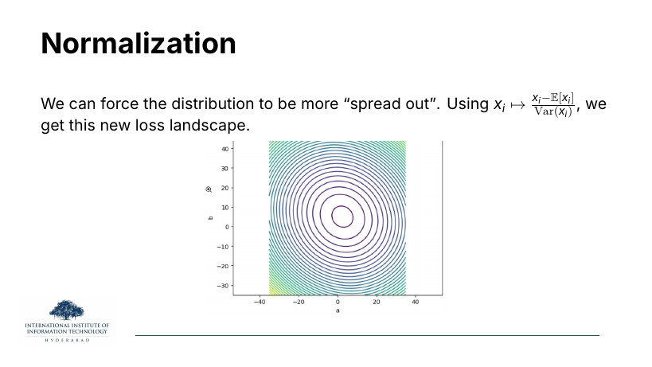
slide 04 · standardise, and the ellipse becomes a circle
On the slide
The exact same regression problem, but with the features standardised:
. The contours become concentric circles — perfectly conditioned.
Why this is the whole idea
On circles, steepest descent points straight at the minimum. Any reasonable learning rate converges in
a few steps. Nothing about the model changed; the input changed. Standardising features rescales
the axes of the loss surface until they are the same length. That's it. Every normalisation scheme in
this lecture is a more elaborate version of the same move, but applied to the activations inside
the network rather than only the raw inputs.
✦ Key takeaway
Normalisation is a geometry fix. It doesn't change what the network can represent; it changes the
shape of the loss surface into one that gradient descent can actually walk down.
Slide 05 / 17
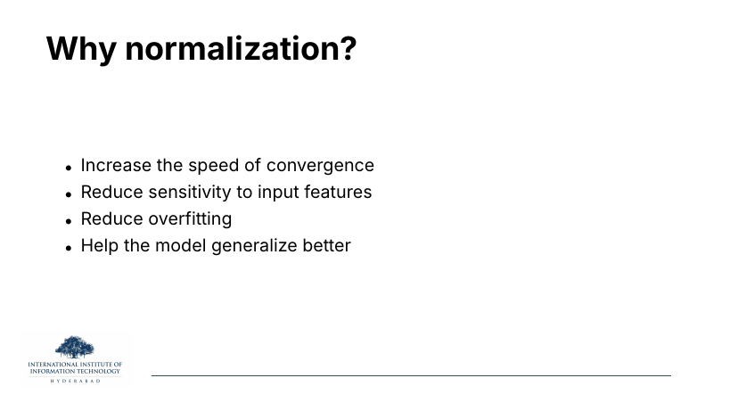
slide 05 · the four-bullet pitch
On the slide
Four benefits attributed to normalization: faster convergence, less sensitivity to feature scale, less
overfitting, better generalisation.
What to take from it
The first two are the geometry story from slides 3–4. The last two are more subtle. Normalising a
hidden layer means the units to the next layer always see a stable distribution — the network
doesn't have to waste capacity re-learning how to handle a shifted scale every batch. That reduces the
effective number of parameters that need tuning, which is one way to see the mild regularisation effect
of BatchNorm and its relatives.
⚠ Watch out
"Reduces overfitting" is not the same as "replaces dropout". Normalization gives a small, incidental
regularisation effect (BatchNorm gets it from batch statistics being noisy; LayerNorm gets almost
none). Don't drop dropout or weight decay because you added normalization.
§2The four flavours: same equation, different axis
Slides 6–10 introduce four normalisers. The first three
(BatchNorm, LayerNorm, RMSNorm) all have the same shape:
subtract a mean, divide by a standard deviation, rescale and
shift by learnable γ and β. The only thing that
changes is which axis you take the statistics over.
WeightNorm is the odd one out: it normalises the parameters,
not the activations.
Slide 06 / 17
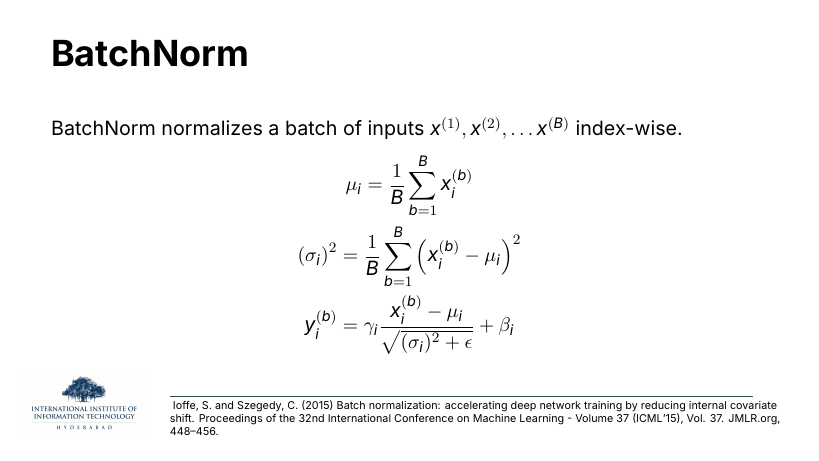
slide 06 · BatchNorm (index-wise, across the batch)
On the slide
BatchNorm, from Ioffe & Szegedy (2015). For each feature index i, you
take the mean and variance over the batch — that is, over all B examples that happen to
be in the mini-batch — then standardise every sample using that per-feature statistic, then rescale by
learnable
and shift by learnable
.
Why "index-wise"
Read it as: pick a feature (say the 5th neuron's output). Now look at that neuron's value across all
B samples in the batch. That's a length-B vector. Standardise it. Do that
independently for every neuron. So the statistics couple samples to each other but keep the
features independent.
⚠ Watch out
The batch statistic is why BatchNorm has two failure modes that matter for NLP. First, small batches
give noisy estimates of μ and σ — with batch size 1 you can't even compute a variance. Second, at
inference you have to keep running-average estimates because there's no batch, and if those averages
don't match the training distribution you silently underperform. Both problems are why NLP mostly moved
to LayerNorm.
Slide 07 / 17
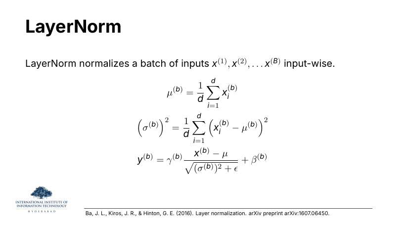
slide 07 · LayerNorm (input-wise, across features)
On the slide
LayerNorm, from Ba, Kiros & Hinton (2016). Same three-step recipe as BatchNorm,
but the mean and variance are taken per sample, over its feature dimensions. So the sum runs
over i = 1…d, not over the batch. Every sample carries its own
and
.
Why LayerNorm wins for transformers
Every one of BatchNorm's failure modes disappears. Batch size doesn't matter — the statistic is computed
inside one sample. Variable-length sequences don't matter — again the statistic is per-token. Training
and inference behave the same because there's no running average to maintain. That's why every big
language model uses LayerNorm (or one of its cousins), not BatchNorm.
⚙ How it works
In transformers the "sample" is usually one token: for each token position, you look at its
d-dimensional embedding, standardise those d numbers among themselves, then apply
per-feature γ and β. Two tokens in the same sequence are normalised independently.
Slide 08 / 17
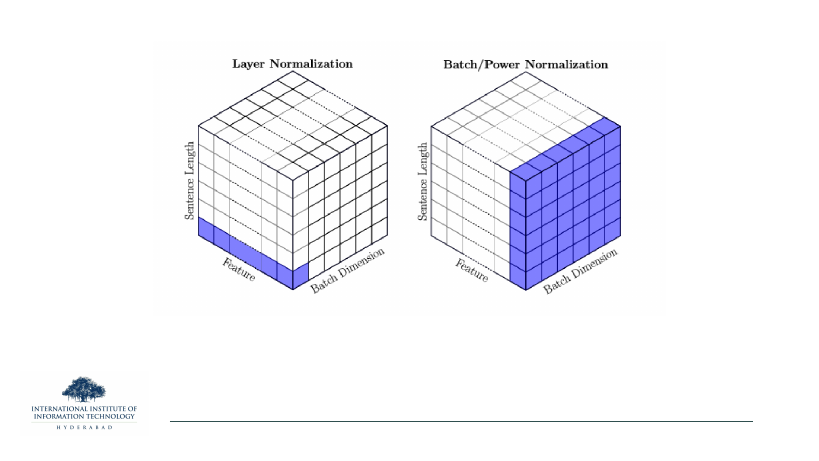
slide 08 · which axis do you normalise over?
On the slide
The clearest picture of the difference. The activation tensor has three axes: batch, sentence length,
and features. LayerNorm slices along the feature axis (blue face on the left), pooling per
token. BatchNorm (and PowerNorm) slices along the batch + sentence plane (blue face on the
right), pooling per feature.
What to take from it
Everything else — GroupNorm, InstanceNorm, RMSNorm — is just a different choice of face on this cube.
Once you can read the picture, you can tell which normalizer any paper is proposing by which face they
colour in. That's the single most useful mental model in this section.
Slide 09 / 17
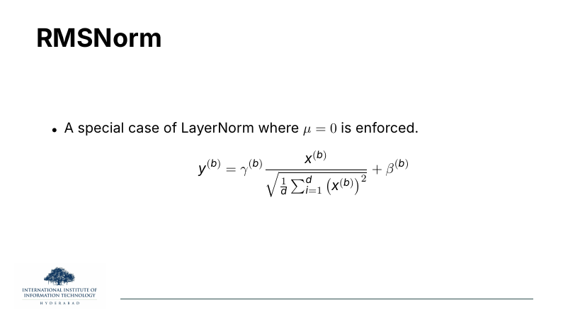
slide 09 · RMSNorm (LayerNorm minus the mean)
On the slide
RMSNorm. LayerNorm normally does two things: recenter (subtract the mean) and
rescale (divide by the standard deviation). RMSNorm drops the recentering step and only rescales, using
the root-mean-square of the activations directly.
Why give up the mean subtraction
Empirically the recentering step contributes almost nothing to the quality of the model but costs a
pass through the data to compute μ. Dropping it saves ~20% of the normaliser's compute and shows no
measurable quality regression. That's why big open-source LLMs (LLaMA, Mistral, Gemma, Qwen) all
switched to RMSNorm. Papers by Zhang & Sennrich (2019) first proposed it; wide adoption came four
years later.
✦ Key takeaway
RMSNorm = LayerNorm with a compute discount. Same shape, same γ/β, one fewer statistic. If a paper
says "we use RMSNorm", read it as "we use LayerNorm and don't care about the centring".
Slide 10 / 17
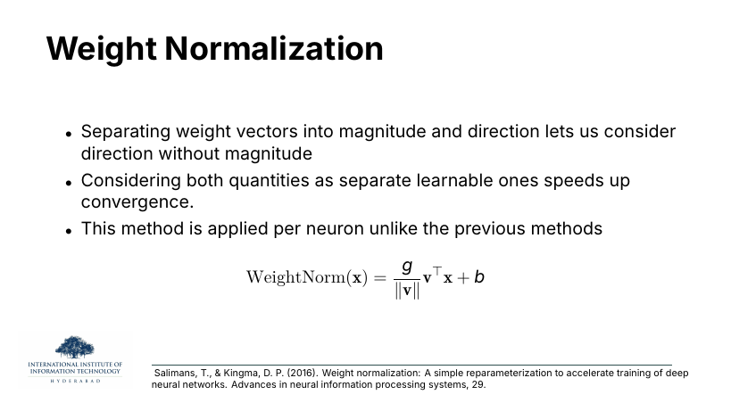
slide 10 · Weight Norm (normalise the weights, not the activations)
On the slide
Weight Normalization, from Salimans & Kingma (2016). Instead of touching
activations, decompose each neuron's weight vector into a direction (unit vector) and a
learnable magnitude
. Optimise the two separately.
Why the decomposition helps
Gradient descent updates weights by adding a scaled gradient. When direction and magnitude are entangled
in one vector, an update that wanted to change only the length of v also nudges its direction,
and vice versa. Separating them means the optimiser gets a cleaner set of "knobs" and can move the two
independently. This speeds convergence in some settings.
⚠ Watch out
Unlike the other three, this one never caught on in transformers. It doesn't remove the
ill-conditioning problem from activations at all — it only fixes weight geometry. Modern architectures
either don't need it (because LayerNorm handles the harder problem) or fold something equivalent into
the initialisation scheme.
§3Residual connections: let the gradient survive depth
Normalisation fixes the geometry of one layer. Residual connections
fix the geometry between layers. Slide 11 gives the
one-line formula that appears in every transformer block; slide 12
shows why, visually, deep networks without residuals are basically
untrainable.
Slide 11 / 17
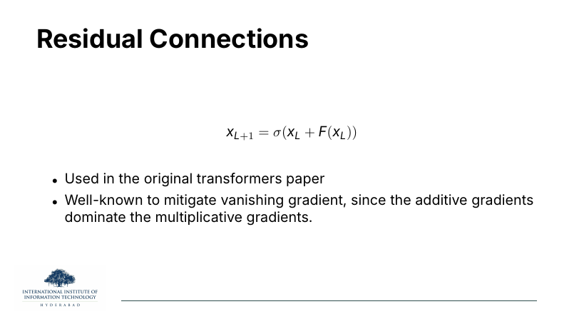
slide 11 · the residual formula
On the slide
The one equation that made deep networks trainable. Layer L+1's output is not just F
applied to layer L's input — it's the input plus what F computed on it (with
a nonlinearity σ around the sum). Introduced by ResNet (He et al., 2015), used everywhere since.
Why residuals fix vanishing gradients
Backprop multiplies gradients through the chain of layers. If each layer's local Jacobian has singular
values less than 1, the gradient shrinks exponentially with depth — that's the vanishing
gradient problem. With a residual, the derivative of xL+1 with
respect to xL gets an extra + I from the shortcut, so even if
F's local Jacobian collapses to zero, the gradient still has a straight-through path of
magnitude 1 back to earlier layers. Additive contributions dominate multiplicative decay.
⚙ How it works
Read
as "the next layer's job is to correct the previous representation, not replace it".
A layer that can't help sets its F ≈ 0 and the identity flows through untouched. That means
extra depth never hurts you: worst case, a redundant layer becomes a no-op.
Slide 12 / 17
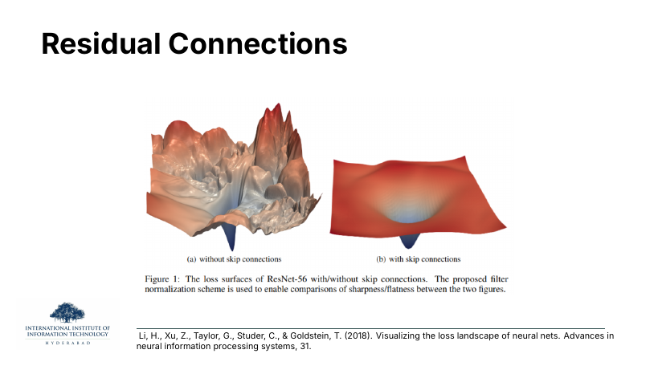
slide 12 · what depth looks like with and without residuals
On the slide
Two visualisations of the same 56-layer ResNet's loss landscape, from Li et al. (2018). On the left, the
network trained without skip connections: a fractal-looking terrain of peaks and canyons. On the
right, the same network with skips: a smooth bowl with a single obvious minimum.
What to take from it
This is the picture people mean when they say "residuals make deep networks trainable". The landscape on
the left is what your optimiser sees, and it is essentially impossible to descend without landing in a
local minimum or a saddle. The landscape on the right is what you get for free by adding an
in every block.
✦ Key takeaway
Normalisation makes the local geometry inside each layer nicer. Residuals make the global geometry
across layers nicer. Every transformer needs both.
§4Pre-LN vs Post-LN: where inside the block?
Once you have LayerNorm and residuals, you have a choice about
where in the block the LayerNorm sits. Two placements
dominate. The original transformer paper (Vaswani et al., 2017)
put it after the addition (Post-LN). The community
converged onto putting it before the sub-layer (Pre-LN)
because it trains much more reliably. Both are still around, and
they behave differently in specific ways.
Slide 13 / 17
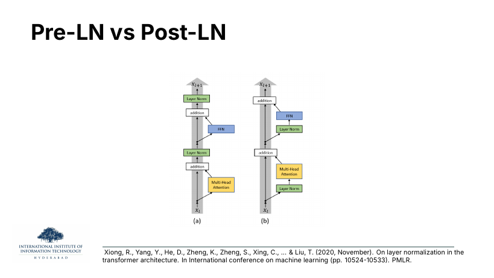
slide 13 · Pre-LN vs Post-LN, in a picture
On the slide
Two block diagrams from Xiong et al. (2020). Both are one layer of a transformer, both have Multi-Head
Attention, an FFN, additions, and LayerNorm — the arrangement is what changes.
- (a) Pre-LN: Norm → sub-layer → add. The LayerNorm is applied to the
residual branch before it enters attention or the FFN. The addition is on raw
xL.
- (b) Post-LN: sub-layer → add → Norm. Attention or FFN runs on
xL, its output is added to the residual, then LayerNorm runs on
the sum. This is the original 2017 layout.
Why one-line difference, big effect
In Post-LN, the residual path itself gets scaled and shifted by LayerNorm at every layer. Small errors
in that normalisation compound down the stack. In Pre-LN, the residual path is untouched — the identity
connection runs unnormalised all the way from input to output, and LayerNorm only affects what gets added
in. That's why Pre-LN behaves like a proper residual network and Post-LN doesn't quite.
Slide 14 / 17
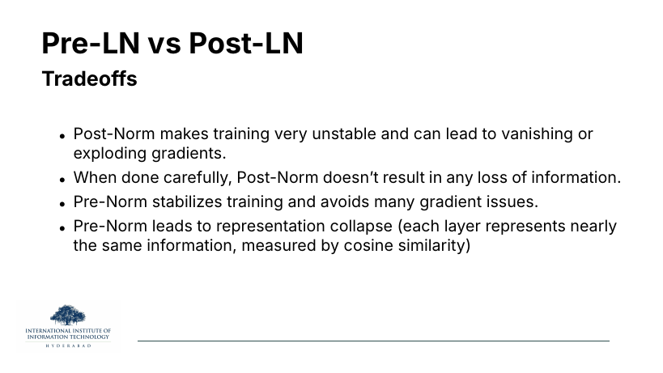
slide 14 · the tradeoff nobody escapes
On the slide
Four bullets that summarise years of empirical work.
The idea behind each
- Post-LN is unstable. Because the residual gets renormalised at every layer, gradient
magnitudes at deeper layers can drift far from those at shallower ones. You often need warmup schedules
and careful learning rates to train a Post-LN transformer at all.
- Done carefully, Post-LN doesn't lose information. If you can get it to train, it
tends to give slightly better final quality than Pre-LN. It's harder, not worse — nothing about the
architecture caps its capacity.
- Pre-LN stabilises training. The untouched residual pathway means gradients flow
cleanly. You can use larger learning rates, skip warmup in some setups, and stack more layers.
- Pre-LN causes representation collapse. This is the surprising finding. Because every
layer's output is dominated by the (unchanged) residual, deep Pre-LN networks tend to have every
intermediate layer looking similar to the next — measured by cosine similarity between layer outputs.
You get depth without the diversity of representations depth is supposed to buy.
⚠ Watch out
The reflex "Pre-LN is just better" is not quite right. It's easier to train, which usually
translates to better final numbers because you actually finish training. But if you have the budget and
the patience for the tricks Post-LN needs, Post-LN gives you a real representation gain. This is why
you still see Post-LN in some production models with careful engineering behind them.
§5DeepNorm: Post-LN that scales to 1000 layers
Slide 15 is a single equation that lets Post-LN work at extreme
depth: multiply the residual by a constant α that depends on the
total number of layers. That's it. Microsoft's DeepNet
paper (Wang et al., 2024) uses this trick to stack transformers
a thousand deep and still keep them stable.
Slide 15 / 17
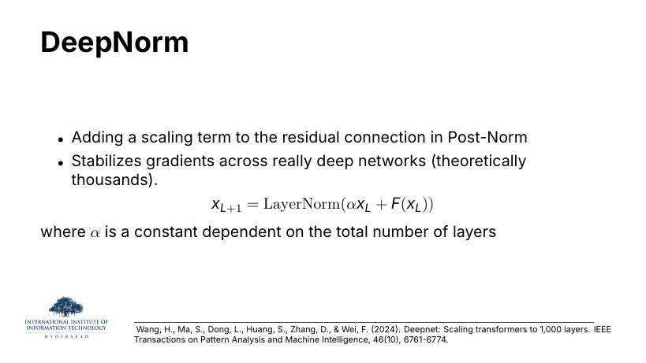
slide 15 · DeepNorm — one α buys 1000 layers of depth
On the slide
DeepNorm. Take the Post-LN block from slide 13(b), and multiply the residual by a
constant α before the addition:
. The α is a fixed constant chosen from the total number of layers.
Why one constant fixes it
The instability of Post-LN comes from the residual and the sub-layer output being on different
scales after LayerNorm renormalises them repeatedly. α pre-weights the residual so that after all
those renormalisations, its contribution stays comparable to the sub-layer's contribution. Wang et al.
derive the exact α as a function of the depth (roughly
for an N-layer encoder), so that gradient norms stay bounded regardless of depth.
✦ Key takeaway
DeepNorm is the whole reason people believe "you can train arbitrarily deep transformers". Before it,
stacking beyond ~100 layers required either heroic tuning or Pre-LN's representation-collapse
compromise. DeepNorm keeps Post-LN's quality with Pre-LN's trainability — for the price of one carefully
chosen constant.
§6HybridNorm: use each normaliser where it earns its keep
The last two slides propose the newest twist. If RMSNorm is 20%
cheaper than LayerNorm but slightly less numerically robust,
and if some positions in the block are more sensitive to
normalisation quality than others — why apply the same
normaliser everywhere? HybridNorm (Zhuo et al., 2026)
puts LayerNorm where it matters and RMSNorm everywhere else.
Slide 16 / 17
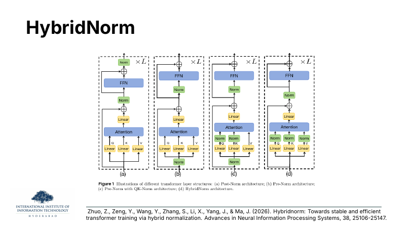
slide 16 · four transformer block layouts
On the slide
Four block designs, drawn as small diagrams to compare where the normalisers sit.
- (a) Post-Norm: LayerNorm on the sum at the top of each block, as in the 2017 paper.
- (b) Pre-Norm: LayerNorm inside the residual branch before attention and before FFN.
- (c) Pre-Norm with QK-Norm: Pre-Norm, plus separate LayerNorms directly on the Q and
K projections inside attention. Helps stabilise the softmax input scale.
- (d) HybridNorm: puts LayerNorm at specific sensitive positions and RMSNorm at the
rest, chosen empirically.
Why the picture, not just the equation
You cannot spot which normaliser is which from the maths — they all look identical on the page. Papers
use these block diagrams because the placement is the whole contribution. Read them as circuit
schematics: where the Norm box sits, and what its input is, determines what property the block gets.
Slide 17 / 17
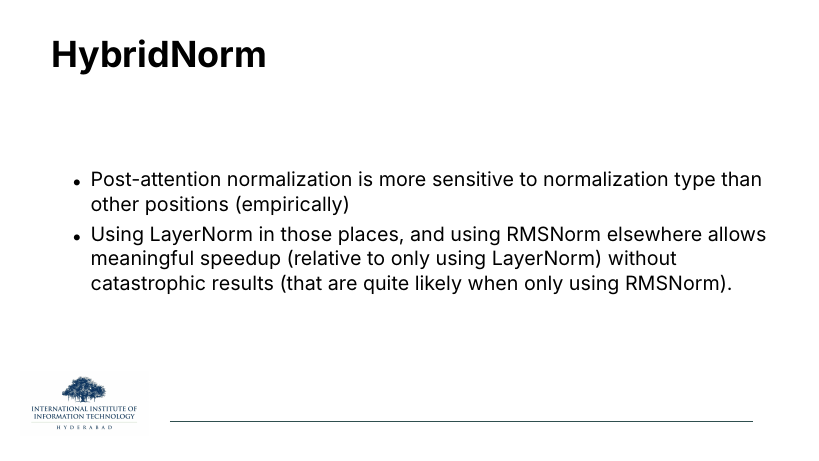
slide 17 · why the mix wins
On the slide
Two-bullet summary of why HybridNorm exists.
The idea behind each
- Post-attention is the sensitive spot. Empirically, the LayerNorm that comes right
after the attention output is the one where RMSNorm's shortcut hurts the most. Attention outputs can
have skewed distributions that need proper mean-subtraction to stay tame.
- Everywhere else is fair game. The remaining LayerNorms (before Q/K/V, after FFN) can
be replaced by RMSNorm with negligible quality loss. You keep the speed win over an all-LayerNorm
network while dodging the crashes you'd see in an all-RMSNorm network.
→ Trend to watch
This is the general shape of a lot of modern architecture research: not "invent a better normaliser"
but "figure out where each one belongs". Similar arguments show up in FP8-training papers (some layers
tolerate low precision, others don't) and in Mixture-of-Experts routing (some tokens want the big
expert, others want the cheap one). Normalisation choice is now a per-position hyperparameter,
not a global one.
Zoom out. Normalisation is layers of fixes for the same underlying
disease: gradient descent hates poorly conditioned landscapes.
Standardise inputs to fix the geometry within a layer
(BatchNorm, LayerNorm, RMSNorm). Add residuals to fix the
geometry across layers. Choose Pre-LN or Post-LN and live with
the tradeoff. Scale to 1000 layers with DeepNorm. Mix normalisers
per-position with HybridNorm. Every one of these is a small piece
of geometry engineering, and each was worth a paper.